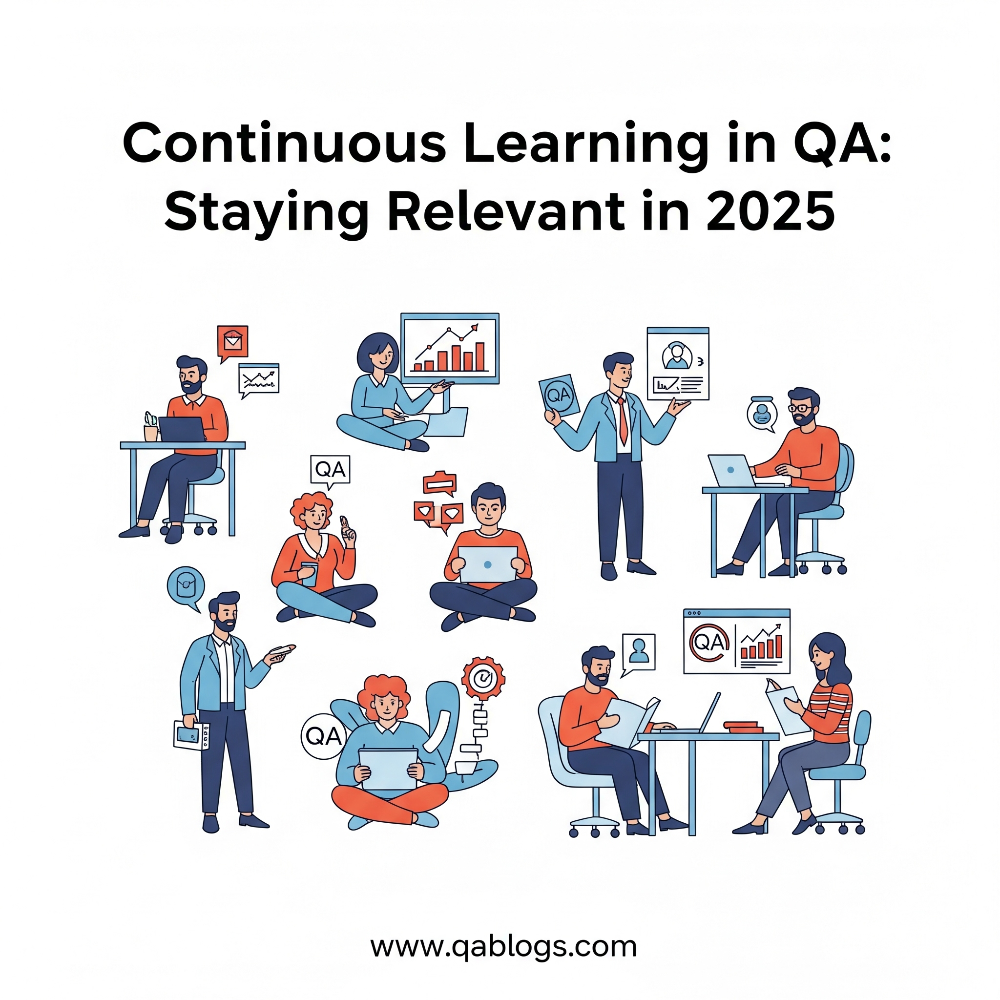

Continuous Learning in QA: Staying Relevant in a Fast-Paced Industry

Key Takeaways
- 78% of QA professionals believe upskilling is critical for career growth
- Edge computing and privacy-first testing are key trends in 2025
- Automation skills are now a baseline requirement for QA roles
- Continuous learning leads to 20% higher salary potential
The Quality Assurance (QA) landscape is evolving at breakneck speed in 2025, driven by rapid technological advancements, shifting industry demands, and the need for faster, more reliable software delivery. For QA professionals, staying relevant means embracing continuous learning to keep up with emerging tools, methodologies, and trends. Whether you're a beginner or a seasoned tester, the ability to adapt through ongoing education is key to thriving in this dynamic field. This blog, crafted for QA Blogs, explores why continuous learning is essential for QA professionals, highlights the latest industry trends shaping QA in 2025, and provides actionable strategies to stay ahead—all while optimizing for SEO to reach a wider audience.
Why Continuous Learning Matters in QA
QA is no longer just about finding bugs—it's about ensuring seamless user experiences, integrating with modern development practices, and leveraging cutting-edge technologies. A 2025 TestRail report reveals that 78% of QA professionals believe upskilling is critical to their career growth, as the industry increasingly demands expertise in automation, security, and distributed systems. Here's why continuous learning is non-negotiable:
- Rapid Technological Changes: New tools, frameworks, and paradigms—like edge computing, quantum computing, and privacy-first technologies—are reshaping QA workflows.
- Shorter Release Cycles: Agile and DevOps practices mean faster sprints, requiring QAs to master CI/CD integration and real-time testing.
- Evolving Skill Requirements: Employers now seek QAs with skills in automation, performance testing, and even basic coding, alongside traditional testing knowledge.
- Career Advancement: Continuous learning opens doors to roles like QA automation engineer, test architect, or DevOps specialist, with LinkedIn reporting a 35% rise in demand for such positions in 2025.
Failing to adapt risks obsolescence in an industry where innovation is constant. Continuous learning ensures you remain a valuable asset to your team and organization.
Key QA Trends in 2025: What to Learn
To stay relevant, QA professionals must focus on the latest trends shaping the industry. Here are the top areas to prioritize in 2025:
1. Edge Computing and IoT Testing
The proliferation of edge computing, fueled by 5G and IoT growth, is a major trend in 2025. Companies like AWS and Microsoft are expanding edge solutions, supporting applications in smart cities, healthcare, and more.
Why Learn It?: Edge applications require testing across distributed systems, diverse devices, and unreliable networks, demanding new skills in compatibility and performance testing.
What to Learn: Basics of edge architecture, device emulation with tools like AWS Device Farm, and network simulation with Charles Proxy.
2. Privacy-First Testing with Zero-Knowledge Proofs (ZKPs)
With stricter privacy regulations (e.g., GDPR, CCPA), privacy-first technologies like ZKPs are gaining traction in blockchain and finance applications. Ethereum and Microsoft are leading adoption in 2025.
Why Learn It?: QA teams must validate privacy mechanisms, ensuring data protection without compromising functionality, a skill increasingly sought after.
What to Learn: Cryptographic testing basics, tools like zk-SNARK test frameworks, and compliance testing for privacy laws.
3. Quantum Computing's Impact on QA
Quantum computing is advancing, with IBM and Google making quantum tools more accessible via platforms like Qiskit. Practical quantum applications are still emerging, but their impact on software testing is imminent.
Why Learn It?: Quantum applications will require new testing frameworks to handle probabilistic outcomes and quantum-specific security challenges.
What to Learn: Quantum computing basics, Qiskit testing libraries, and post-quantum cryptography testing.
4. Shift-Left and Shift-Right Testing
Shift-left (testing early in development) and shift-right (testing in production) approaches are becoming standard in Agile/DevOps environments.
Why Learn It?: These practices ensure quality throughout the SDLC, requiring QAs to collaborate closely with developers and monitor live environments.
What to Learn: CI/CD integration with Jenkins or GitHub Actions, observability tools like Prometheus, and A/B testing in production.
5. Automation and Tool Proficiency
Automation remains a cornerstone of modern QA, with 2025 seeing increased adoption of tools like Katalon, LambdaTest's KaneAI, and Playwright for browser testing.
Why Learn It?: Manual testing alone can't keep up with rapid release cycles—automation skills are now a baseline requirement.
What to Learn: Selenium, Playwright, or Cypress for web testing, and scripting in Python or JavaScript for test automation.
Actionable Strategies for Continuous Learning in QA
Continuous learning doesn't have to be overwhelming. Here are practical steps to stay relevant and grow your QA career in 2025:
1. Build a Learning Roadmap
Start by identifying your current skills and the gaps you need to fill based on industry trends.
- Assess Skills: Are you strong in manual testing but new to automation? Do you understand edge computing basics?
- Set Goals: Aim to learn one new skill per quarter, like mastering Playwright or understanding ZKPs.
- Create a Schedule: Dedicate 1–2 hours weekly to learning—e.g., Tuesday evenings for online courses, Saturday mornings for reading blogs.
Tip: Use tools like Trello to track your learning goals and progress, keeping you motivated and organized.
2. Leverage Online Learning Platforms
Online platforms offer accessible, affordable ways to upskill in QA:
- Udemy/Coursera: Take courses like "Selenium WebDriver with Python" or "Introduction to Edge Computing" (many are under $15 during sales).
- Pluralsight: Offers QA-specific paths like "Test Automation with Playwright" with a free trial.
- YouTube: Channels like "The Testing Academy" provide free tutorials on automation, CI/CD, and more.
Tip for Beginners: Start with free courses to explore topics, then invest in paid ones for deeper dives.
3. Join QA Communities and Forums
Engaging with peers helps you learn from real-world experiences and stay updated:
- Reddit: Join r/QualityAssurance to ask questions and share knowledge.
- Stack Overflow: Participate in QA-related threads to learn problem-solving techniques.
- LinkedIn Groups: Follow groups like "Software Testing & QA Professionals" for industry updates and networking.
Tip: Share your learning journey in these communities—e.g., post about a new tool you've tried—to build connections and credibility.
4. Experiment with Hands-On Projects
Practical experience cements your learning and builds confidence:
- Set Up a Test Project: Create a simple web app (e.g., using GitHub Pages) and practice testing it with Selenium or Playwright.
- Simulate Edge Testing: Use AWS Device Farm to emulate IoT devices and test a mock edge app for compatibility.
- Contribute to Open Source: Join projects on GitHub to practice testing real-world applications, like writing tests for a smart home app.
Tip: Document your projects in a portfolio (e.g., on GitHub) to showcase your skills to employers.
5. Stay Updated with Industry Blogs and Reports
Following QA blogs and reports keeps you informed about trends and tools:
- QA Blogs: Your go-to source for QA insights (shameless plug)! Check our posts on edge testing and more.
- TestRail Blog: Offers updates on testing trends and best practices.
- Gartner/Forrester Reports: Read summaries of QA trends for 2025, often available via free webinars.
Tip: Subscribe to newsletters from these sources to get updates delivered to your inbox weekly.
6. Attend Conferences and Webinars
Conferences provide networking opportunities and exposure to new ideas:
- TestCon 2025: A virtual QA conference in July 2025, featuring sessions on automation and edge testing (many sessions are free).
- LambdaTest Webinars: Free monthly webinars on topics like "Testing in Distributed Systems" or "Playwright for Beginners."
- Local Meetups: Check Meetup.com for QA events in your area—e.g., "India QA Meetup" groups often host free sessions.
Tip: Follow event organizers on LinkedIn or X to catch early-bird discounts or free access to virtual sessions.
7. Learn Basic Coding and Scripting
Coding skills are increasingly essential for QA roles:
- Python: Great for automation scripts—start with a free course like "Automate the Boring Stuff with Python."
- JavaScript: Useful for web testing with tools like Playwright or Cypress.
- SQL: Learn to query databases for backend testing, using free resources like W3Schools.
Tip: Practice coding daily with platforms like LeetCode or Codecademy, starting with 15-minute sessions.
8. Collaborate with Cross-Functional Teams
Learning from developers, DevOps engineers, and product managers broadens your perspective:
- Shadow Developers: Sit in on coding sessions to understand how apps are built, improving your testing approach.
- Join Sprint Reviews: Learn how QA fits into Agile workflows and identify areas to upskill (e.g., CI/CD integration).
- Ask Questions: Don't hesitate to ask team members about new technologies they're using, like ZKPs or edge frameworks.
Tip: Use Slack or Microsoft Teams to create a "learning channel" where your team shares resources and insights.
Overcoming Common Learning Challenges
Continuous learning can feel daunting, especially with a busy schedule. Here's how to tackle common hurdles:
- Time Constraints: Dedicate small, consistent time blocks (e.g., 30 minutes daily) rather than long sessions. Use commute time for podcasts like "Test & Code."
- Information Overload: Focus on one topic at a time—e.g., master Playwright before moving to edge testing.
- Lack of Motivation: Set small, achievable goals (e.g., "Complete one Udemy module this week") and reward yourself with a treat, like a coffee break.
Real-World Benefits of Continuous Learning
Continuous learning pays off in tangible ways:
- Career Growth: A QA who learned Playwright in 2025 landed a Test Automation Engineer role with a 20% salary bump, per a LinkedIn case study.
- Project Impact: A beginner QA who upskilled in edge testing helped their team catch critical bugs in a smart home app, earning recognition.
- Job Security: Companies value QAs who adapt to trends like quantum computing, ensuring long-term relevance.
FAQs
Why is continuous learning important for QA professionals?
The QA industry evolves rapidly with new tools and trends like edge computing and privacy-first tech. Continuous learning ensures you stay relevant and competitive.
What are the top QA skills to learn in 2025?
Focus on edge computing testing, privacy-first testing (e.g., ZKPs), automation with tools like Playwright, and CI/CD integration.
How can beginners start learning QA skills?
Start with free resources like YouTube tutorials, join communities like r/QualityAssurance, and practice with tools like Postman or Selenium.
How do I balance learning with a busy QA job?
Dedicate small, consistent time blocks (e.g., 30 minutes daily), use commute time for podcasts, and focus on one skill at a time to avoid overwhelm.
Conclusion
Continuous learning is the cornerstone of a successful QA career in 2025, empowering you to navigate the fast-paced industry with confidence. By focusing on trends like edge computing, privacy-first testing, and automation, and using strategies like online courses, community engagement, and hands-on projects, you can stay ahead of the curve. The effort you invest today will pay off in career growth, project impact, and job security tomorrow. Start your learning journey now—pick one skill, set a goal, and take the first step toward becoming an indispensable QA professional.
Ready to upskill? Explore more QA tips and trends at QA Blogs and share your learning journey with our community!
Join Our Community of QA Professionals
Get exclusive access to in-depth articles, testing strategies, and industry insights. Stay ahead of the curve with our expert-curated content delivered straight to your inbox.
Nikunj Mistri
Founder, QA Blogs
About the Author